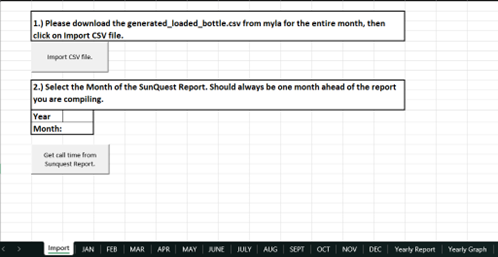
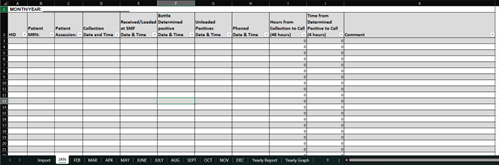
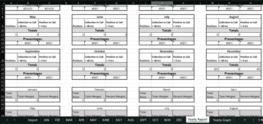
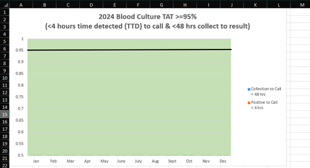

Lab staff used a CSV file generated by Virtuo incubators to track positive blood culture TAT. The process was manual: reformatting, then individual Sunquest lookups for call times, then manager-side graphing.
Solution
Built a tool to ingest the Virtuo CSV and write records to the correct month tab in the BC TAT Report.
Worked with Digital Application Analytics to develop a monthly Sunquest report capturing call time.
Merged Sunquest call-time data with the BC TAT Report and added analytics to identify missing/uncrossed positives.
Impact
Reduced data entry errors and decreased time spent from a few hours a week to a couple hours a month.

Sheet used to import CSV file and get the times from Sunquest report.

Blue arrow shows main house, and the purple shows the cottage. The red line shows the point-to-point path and is approximately 250 feet.

Report sheet that shows totals and percentages for each month and shows data on how many are imported from Sunquest Report..

Graph to show TAT data.